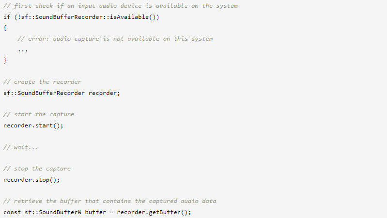
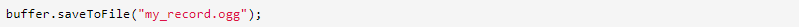
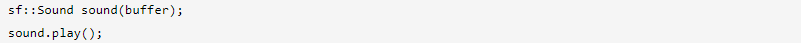
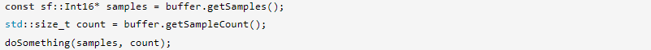
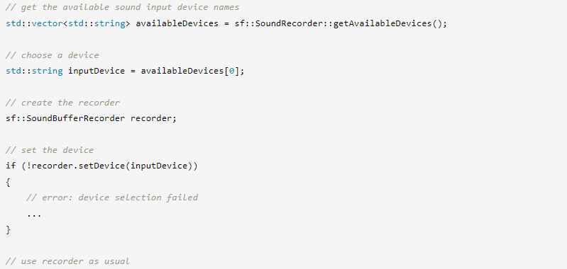
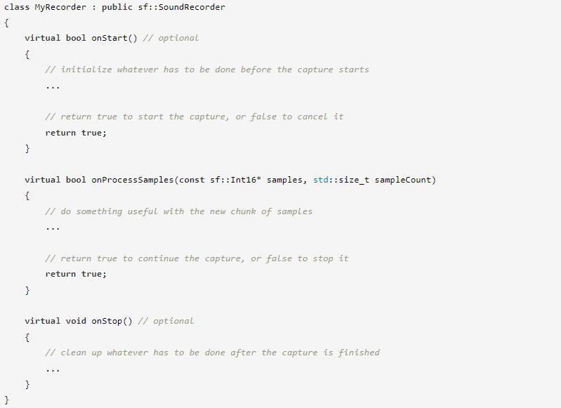
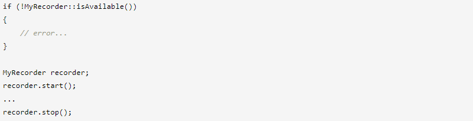

⇐Воспроизведение звуков и музыки
Чаще всего захваченные аудиоданные используются для их сохранения в звуковой буфер (sf::SoundBuffer), чтобы их можно было либо воспроизвести, либо сохранить в файл.
Этого можно добиться с помощью очень простого интерфейса класса sf::SoundBufferRecorder:
Статическая функция SoundBufferRecorder::isAvailable проверяет, поддерживается ли системой запись звука. Если он возвращает false, вы вообще не сможете использовать класс sf::SoundBufferRecorder.
Функции запуска и остановки говорят сами за себя. Захват выполняется в собственном потоке, что означает, что вы можете делать все, что хотите, между запуском и остановкой. После окончания захвата записанные аудиоданные доступны в звуковом буфере, который можно получить с помощью функции getBuffer.
С записанными данными вы можете:
Сохраните его в файл
Играть напрямую
Получите доступ к необработанным аудиоданным и проанализируйте их, преобразуйте и т. д.
Если вы хотите использовать захваченные аудиоданные после уничтожения или перезапуска диктофона, не забудьте сделать копию буфера.
Если к вашему компьютеру подключено несколько устройств ввода звука (например, микрофон, звуковой интерфейс (внешняя звуковая карта) или микрофон веб-камеры), вы можете указать устройство, которое используется для записи. Устройство ввода звука идентифицируется по его имени. std::vector<std::string>, содержащий имена всех подключенных устройств, доступен через статическую функцию SoundBufferRecorder::getAvailableDevices(). Затем вы можете выбрать устройство из списка для записи, передав имя выбранного устройства методу setDevice(). Возможна даже смена устройства на лету (т.е. во время записи).
Имя используемого в данный момент устройства можно получить, вызвав getDevice(). Если вы не выберете устройство самостоятельно, будет использоваться устройство по умолчанию. Его имя можно получить с помощью статической функции SoundBufferRecorder::getDefaultDevice().
Вот небольшой пример того, как установить устройство ввода:
Если хранение захваченных данных в звуковом буфере вас не устраивает, вы можете написать свой собственный рекордер. Это позволит вам обрабатывать аудиоданные во время их захвата (почти) непосредственно с записывающего устройства. Таким образом, вы можете, например, транслировать захваченный звук по сети, выполнять его анализ в реальном времени и т. д.
Чтобы написать свой собственный рекордер, вы должны наследовать его от абстрактного базового класса sf::SoundRecorder. На самом деле sf::SoundBufferRecorder — это просто встроенная специализация этого класса.
У вас есть только одна виртуальная функция для переопределения в производном классе: onProcessSamples. Он вызывается каждый раз, когда захватывается новый кусок аудиосэмпла, так что именно здесь вы реализуете свои конкретные вещи.
По умолчанию образцы аудио предоставляются методу onProcessSamples каждые 100 мс. Вы можете изменить интервал, используя метод setProcessingInterval. Вы можете использовать меньший интервал, например, если хотите обрабатывать записанные данные в режиме реального времени. Обратите внимание, что это всего лишь подсказка, а фактический период может отличаться, поэтому не полагайтесь на него для точного определения времени.
Есть также две дополнительные виртуальные функции, которые вы можете переопределить: onStart и onStop. Они вызываются при запуске/остановке захвата соответственно. Они полезны для задач инициализации/очистки.
Вот скелет полного производного класса:
Функции isAvailable/start/stop определены в базе sf::SoundRecorder и, таким образом, наследуются во всех производных классах. Это означает, что вы можете использовать любой класс рекордера точно так же, как класс sf::SoundBufferRecorder выше.
Поскольку запись ведется в отдельном потоке, важно знать, что именно происходит и где.
onStart будет вызываться непосредственно функцией запуска, поэтому она выполняется в том же потоке, который ее вызвал. Однако onProcessSample и onStop всегда будут вызываться из внутреннего потока записи, который создает SFML.
Если ваш рекордер использует данные, которые могут быть доступны одновременно как в вызывающем потоке, так и в потоке записи, вы должны защитить их (например, с помощью мьютекса), чтобы избежать одновременного доступа, который может привести к неопределенному поведению — поврежденные данные записано, сбои и т.д.
Если вы недостаточно знакомы с многопоточностью, вы можете обратиться к соответствующему руководству для получения дополнительной информации.